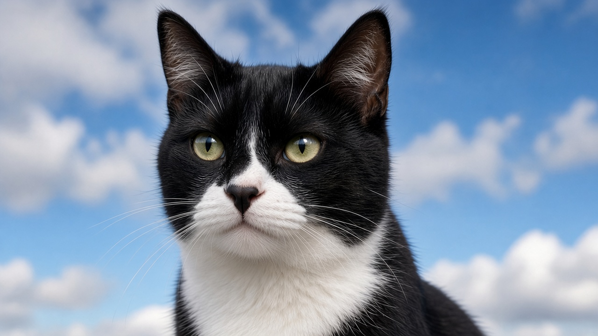

Sky is a tuxedo cat with a black-button nose, and she has always been here. Sky does not vote, Sky never holds the lantern, and the tide cannot take Sky. Sky keeps her own log.
Current favorite: Lucía · Nemesis: Rand